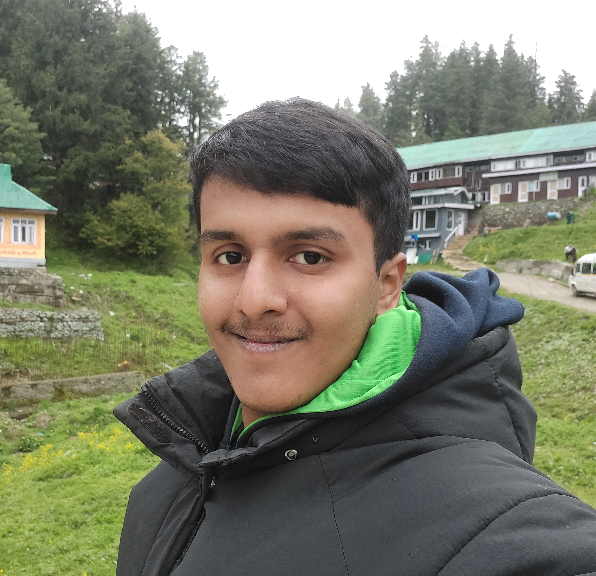

<link rel="stylesheet" href="{{'/assets/css/custom.css' | absolute_url}}">
<link rel="icon" type="image/x-icon" href="./my_photo_gulmarg.jpg">

<section>
<div class="float-container">
  <div class="float-child" style="width:65%;float:left">
    <h1>Hi, I am Shreyas Nadkarni</h1>
    <p> Welcome to my website. You can check out my profile, academic endeavours, projects, and extra-curricular interests.</p>
    <p> Please use the links in the header to navigate.</p>
    <p> Cheers!</p>
  </div>
  
  <div class="float-child" style="width:30%;float:right">
    
  </div>
</div>
</section>

<section>
  <h2>About Me</h2>
  <p>I am 22 years of age. I live in Mumbai. I am pursuing a Dual Degree at <b>IIT Bombay</b>: B.Tech in <b>Electrical Engineering</b> and M.Tech in <b>Artificial Intelligence and Data Science</b>. </p>
  <p> For my masters thesis, I am working in the field of Music Information Retrieval on a task aimed at finding correspondence between mutiple modalities in Hindustani classical music performances. I am also a research assistant at Digital Audio Processing Lab, IIT Bombay.</p>
  <p>I am a budding Data Scientist and ML engineer. Developing intelligent systems for automation and building end-to-end pipelines for their seamless working interests me quite a lot. My key area of expertise is <b>Python</b> programming for system development, data processing and ML. I have completed multiple projects in Python over the last 4 years.</p>
  <p>I am going to start my first full-time job at NoBroker Technologies Solutions Pvt Ltd. in August 2024 as an Associate Data Scientist.</p>
</section>


<!-- <div>
  This website has been developed using <a href="https://jekyllrb.com/">Jekyll</a> and <a href="https://jekyllthemes.io/theme/minimal-mistakes">Minimal Mistakes</a> theme

</div> -->
